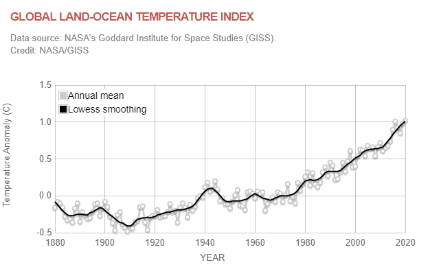
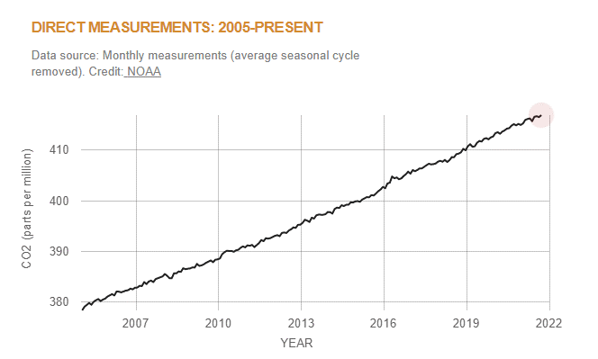
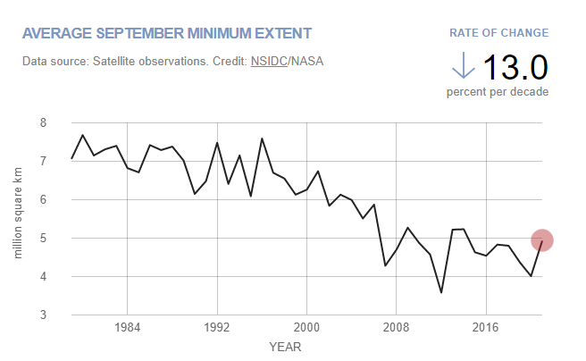
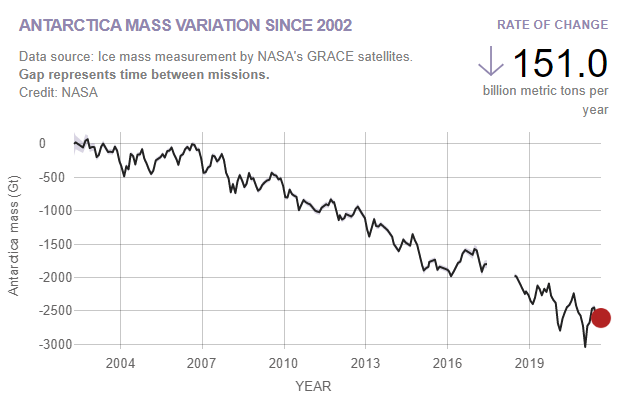
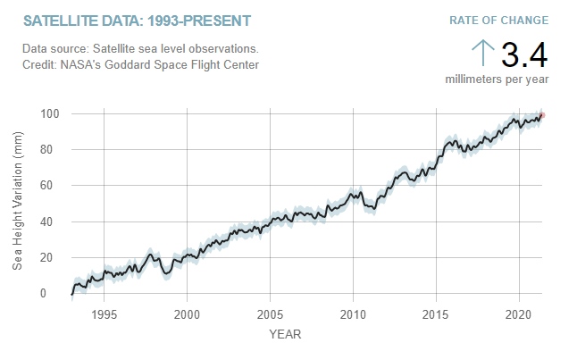
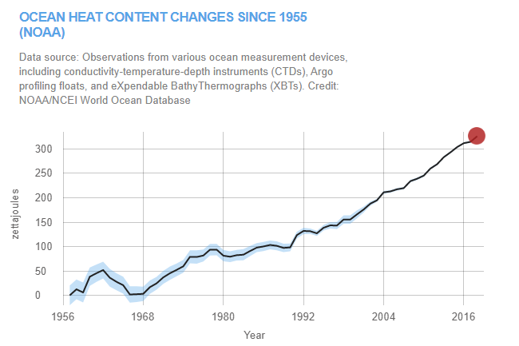

TEMPERATURE

The temperature has been rising continuously over the past 50 years as you can see in the graph.
- This graph illustrates the change in global surface temperature relative to 1951-1980 average temperatures. Nineteen of the hottest years have occurred since 2000, with the exception of 1998, which was helped by a very strong El Niño. The year 2020 tied with 2016 for the hottest year on record since record-keeping began in 1880 (source: NASA/GISS). This research is broadly consistent with similar constructions prepared by the Climatic Research Unit and the National Oceanic and Atmospheric Administration.
- Greenhouse gases are trapping more heat in the Earth's atmosphere, which is causing average temperatures to rise all over the world.
________________________________________________________________________________________________________________________________________________________________________
CARBON DIOXIDE

The Carbon-Dioxide levels in the atmosphere have been rising continuously as you can see in the graph.
- Carbon dioxide (CO2) is an important heat-trapping (greenhouse) gas, which is released through human activities such as deforestation and burning fossil fuels, as well as natural processes such as respiration and volcanic eruptions. The first graph shows atmospheric CO2 levels measured at Mauna Loa Observatory, Hawaii, in recent years, with the average seasonal cycle removed. The second graph shows CO2 levels during the last three glacial cycles, as reconstructed from ice cores.
- Over the past 171 years, human activities have raised atmospheric concentrations of CO2 by nearly 49% above pre-industrial levels starting in 1850. This is more than what had happened naturally over a 20,000 year period (from the Last Glacial Maximum to 1850, from 185 ppm to 280 ppm).
________________________________________________________________________________________________________________________________________________________________________
ARCTIC SEA ICE MINIMUM

The arctic sea ice levels have been depleting continuously as you can see in the graph.
- Arctic sea ice extent has declined significantly in all months since satellite measurements began in 1979, with Septembers showing the largest declines. The last 15 Septembers show the lowest values.
- Arctic sea ice reaches its minimum each September. September Arctic sea ice is now declining at a rate of 13% per decade, relative to the 1981 to 2010 average. This graph shows the average monthly Arctic sea ice extent each September since 1979, derived from satellite observations.
________________________________________________________________________________________________________________________________________________________________________
ICE SHEETS

The ice sheets have been depleting continuously over the past 50 years as you can see in the graph.
- The Greenland and Antarctic ice sheets are losing significant amounts of land-based ice as a result of human-caused global warming.
- Data from NASA's GRACE and GRACE Follow-On satellites show that the land ice sheets in Antarctica have been losing mass since 2002. The GRACE mission concluded science operations in June 2017.
- GRACE Follow-On began data collection in June 2018 and is now continuing the mass change data record for both ice sheets. This data record includes the latest data processing improvements and is continually updated as more data are collected (with a lag of up to two months).
________________________________________________________________________________________________________________________________________________________________________
SEA LEVELS

The sea levels have been rising continuously as you can see in the graph.
- Global sea levels are rising as a result of human-caused global warming, with recent rates being unprecedented over the past 2,000-plus years.
- Sea level rise is caused primarily by two factors related to global warming: the added water from melting ice sheets and glaciers and the expansion of seawater as it warms. The first graph tracks the change in sea level since 1993 as observed by satellites.
________________________________________________________________________________________________________________________________________________________________________
OCEAN HEAT CONTENT

The ocean has been heating up continuously as you can see in the graph.
- Ninety percent of global warming is occurring in the ocean, with the last decade and the year 2020 being the hottest.
- Ninety percent of global warming is occurring in the ocean, causing the water’s internal heat to increase since modern record-keeping began in 1955, as shown in the upper chart. (The shaded blue region indicates the 95% margin of uncertainty.) This chart shows annual estimates for the first 2,000 meters of ocean depth.
- Each data point in the upper chart represents a five-year average. For example, the 2018 value represents the average change in ocean heat content (since 1955) for the years 2016 to and including 2020.
________________________________________________________________________________________________________________________________________________________________________